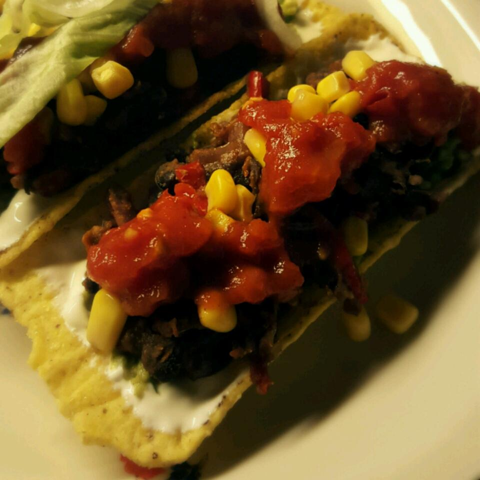

Vegan Bean Taco Filling

Description
Taco filling using fried beans as its base. Great with taco shells, tortillas, or chips.
Contains lot of proteins.
Ingredients
- 1 tablespoons olive oil
- 1 onion, diced
- 2 cloves garlic, minced
- 1 bell pepper, chopped
- 2 (14.5 ounce) cans black beans, rinsed, drained, and mashed
- 2 tablespoons yellow cornmeal
- 1 ½ tablespoons cumin
- 1 teaspoon paprika
- 1 teaspoon cayenne pepper
- 1 teaspoon chili powder
- 1 cup salsa
Steps
- HHeat olive oil in a medium skillet over medium heat.
- Stir in onion, garlic, and bell pepper; cook until tender.
- Stir in mashed beans. Add the cornmeal. Mix in cumin, paprika, cayenne, chili powder, and salsa. Cover, and cook 5 minutes.